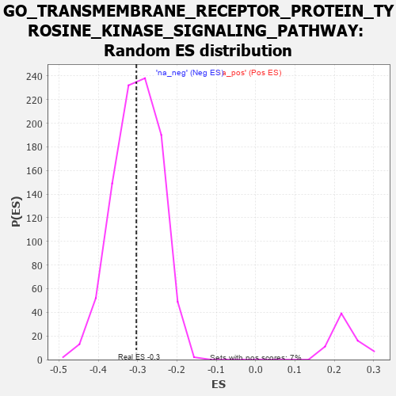

| | | Dataset | 7d |
| Phenotype | NoPhenotypeAvailable |
| Upregulated in class | na_neg |
| GeneSet | GO_TRANSMEMBRANE_RECEPTOR_PROTEIN_TYROSINE_KINASE_SIGNALING_PATHWAY |
| Enrichment Score (ES) | -0.30319008 |
| Normalized Enrichment Score (NES) | -1.005777 |
| Nominal p-value | 0.47572815 |
| FDR q-value | 0.86762655 |
| FWER p-Value | 1.0 |
Table: GSEA Results Summary
 Fig 1: Enrichment plot: GO_TRANSMEMBRANE_RECEPTOR_PROTEIN_TYROSINE_KINASE_SIGNALING_PATHWAY
Fig 1: Enrichment plot: GO_TRANSMEMBRANE_RECEPTOR_PROTEIN_TYROSINE_KINASE_SIGNALING_PATHWAY
Profile of the Running ES Score & Positions of GeneSet Members on the Rank Ordered List
| PROBE | GENE SYMBOL | GENE_TITLE | RANK IN GENE LIST | RANK METRIC SCORE | RUNNING ES | CORE ENRICHMENT | | 1 | IRS1 | | | 98 | 1.659 | 0.0144 | No |
| 2 | CSRP3 | | | 161 | 1.186 | 0.0258 | No |
| 3 | HGF | | | 276 | 0.870 | 0.0254 | No |
| 4 | DLL1 | | | 337 | 0.760 | 0.0301 | No |
| 5 | GSK3A | | | 351 | 0.745 | 0.0405 | No |
| 6 | ARNT | | | 357 | 0.741 | 0.0519 | No |
| 7 | LRP1 | | | 470 | 0.648 | 0.0482 | No |
| 8 | AKT1 | | | 1040 | 0.476 | -0.0167 | No |
| 9 | AP3S1 | | | 1063 | 0.471 | -0.0119 | No |
| 10 | SRC | | | 1128 | 0.459 | -0.0126 | No |
| 11 | FIBP | | | 1129 | 0.458 | -0.0051 | No |
| 12 | NCK2 | | | 1131 | 0.458 | 0.0022 | No |
| 13 | MTSS1 | | | 1149 | 0.454 | 0.0074 | No |
| 14 | GAB1 | | | 1158 | 0.453 | 0.0137 | No |
| 15 | PTBP1 | | | 1441 | 0.402 | -0.0157 | No |
| 16 | SOS1 | | | 1547 | 0.384 | -0.0229 | No |
| 17 | PTPRT | | | 1578 | 0.378 | -0.0206 | No |
| 18 | CDK4 | | | 1626 | 0.370 | -0.0206 | No |
| 19 | ESRP1 | | | 1653 | 0.364 | -0.0180 | No |
| 20 | SGPL1 | | | 1820 | 0.334 | -0.0337 | No |
| 21 | AP2S1 | | | 1846 | 0.329 | -0.0316 | No |
| 22 | NUP62 | | | 1871 | 0.324 | -0.0294 | No |
| 23 | NCOA5 | | | 1884 | 0.322 | -0.0257 | No |
| 24 | PAK3 | | | 1889 | 0.322 | -0.0210 | No |
| 25 | CUL5 | | | 1947 | 0.314 | -0.0231 | No |
| 26 | FOXO4 | | | 2004 | 0.304 | -0.0253 | No |
| 27 | RAF1 | | | 2011 | 0.303 | -0.0212 | No |
| 28 | VPS25 | | | 2033 | 0.300 | -0.0190 | No |
| 29 | DDR1 | | | 2176 | 0.280 | -0.0326 | No |
| 30 | SYK | | | 2186 | 0.278 | -0.0292 | No |
| 31 | C2CD5 | | | 2204 | 0.276 | -0.0269 | No |
| 32 | SHC2 | | | 2263 | 0.266 | -0.0300 | No |
| 33 | WASF1 | | | 2303 | 0.259 | -0.0307 | No |
| 34 | NCBP2 | | | 2383 | 0.248 | -0.0368 | No |
| 35 | MET | | | 2430 | 0.240 | -0.0387 | No |
| 36 | FRS3 | | | 2482 | 0.229 | -0.0415 | No |
| 37 | VAV3 | | | 2614 | 0.210 | -0.0548 | No |
| 38 | GRB14 | | | 2666 | 0.204 | -0.0580 | No |
| 39 | ZGPAT | | | 2694 | 0.200 | -0.0582 | No |
| 40 | FER | | | 2803 | 0.183 | -0.0690 | No |
| 41 | BRK1 | | | 2805 | 0.183 | -0.0662 | No |
| 42 | PHF14 | | | 2838 | 0.178 | -0.0674 | No |
| 43 | FGFR2 | | | 2895 | 0.167 | -0.0718 | No |
| 44 | SOCS4 | | | 2953 | 0.157 | -0.0765 | No |
| 45 | SHB | | | 2974 | 0.154 | -0.0766 | No |
| 46 | WNT4 | | | 3023 | 0.146 | -0.0803 | No |
| 47 | AP2A2 | | | 3433 | 0.085 | -0.1311 | No |
| 48 | HGS | | | 3476 | 0.080 | -0.1352 | No |
| 49 | FES | | | 3501 | 0.077 | -0.1370 | No |
| 50 | TNS2 | | | 3588 | 0.062 | -0.1470 | No |
| 51 | MAPK3 | | | 3589 | 0.062 | -0.1460 | No |
| 52 | CBL | | | 3621 | 0.056 | -0.1490 | No |
| 53 | EPN2 | | | 3691 | 0.045 | -0.1571 | No |
| 54 | DGKQ | | | 3856 | 0.020 | -0.1777 | No |
| 55 | NRG3 | | | 3925 | 0.005 | -0.1863 | No |
| 56 | IGF1R | | | 3970 | -0.002 | -0.1919 | No |
| 57 | CHMP6 | | | 3977 | -0.003 | -0.1926 | No |
| 58 | CSF1 | | | 4074 | -0.019 | -0.2045 | No |
| 59 | ABL1 | | | 4125 | -0.027 | -0.2105 | No |
| 60 | PLCE1 | | | 4127 | -0.028 | -0.2101 | No |
| 61 | CRK | | | 4139 | -0.031 | -0.2110 | No |
| 62 | AP2B1 | | | 4185 | -0.039 | -0.2161 | No |
| 63 | STAM2 | | | 4193 | -0.041 | -0.2164 | No |
| 64 | ARPC2 | | | 4232 | -0.047 | -0.2204 | No |
| 65 | GPC1 | | | 4238 | -0.048 | -0.2203 | No |
| 66 | OPA1 | | | 4330 | -0.065 | -0.2308 | No |
| 67 | ADRB2 | | | 4352 | -0.068 | -0.2324 | No |
| 68 | ARF4 | | | 4383 | -0.073 | -0.2350 | No |
| 69 | CDC37 | | | 4446 | -0.084 | -0.2416 | No |
| 70 | HIP1 | | | 4485 | -0.092 | -0.2449 | No |
| 71 | NPTN | | | 4519 | -0.098 | -0.2476 | No |
| 72 | NTRK2 | | | 4543 | -0.104 | -0.2488 | No |
| 73 | APC | | | 4558 | -0.107 | -0.2489 | No |
| 74 | GATA3 | | | 4614 | -0.120 | -0.2539 | No |
| 75 | FGFR3 | | | 4656 | -0.129 | -0.2571 | No |
| 76 | ARPC3 | | | 4659 | -0.129 | -0.2552 | No |
| 77 | PLCG1 | | | 4770 | -0.151 | -0.2668 | No |
| 78 | RTN4 | | | 4783 | -0.154 | -0.2658 | No |
| 79 | RAB14 | | | 4784 | -0.155 | -0.2633 | No |
| 80 | FBXW7 | | | 4816 | -0.161 | -0.2646 | No |
| 81 | SIK2 | | | 4875 | -0.172 | -0.2692 | No |
| 82 | FZD4 | | | 4940 | -0.186 | -0.2744 | No |
| 83 | ARAP1 | | | 4963 | -0.191 | -0.2741 | No |
| 84 | PDPK1 | | | 5043 | -0.207 | -0.2808 | No |
| 85 | ITSN1 | | | 5094 | -0.222 | -0.2836 | No |
| 86 | MMP9 | | | 5108 | -0.227 | -0.2815 | No |
| 87 | IDE | | | 5252 | -0.258 | -0.2956 | Yes |
| 88 | PTEN | | | 5262 | -0.261 | -0.2925 | Yes |
| 89 | EPHA4 | | | 5273 | -0.265 | -0.2895 | Yes |
| 90 | RAB7A | | | 5302 | -0.271 | -0.2887 | Yes |
| 91 | EPN1 | | | 5304 | -0.272 | -0.2844 | Yes |
| 92 | ELMO2 | | | 5341 | -0.283 | -0.2844 | Yes |
| 93 | EPHA1 | | | 5349 | -0.285 | -0.2806 | Yes |
| 94 | GRIN1 | | | 5381 | -0.291 | -0.2799 | Yes |
| 95 | CBLB | | | 5445 | -0.306 | -0.2829 | Yes |
| 96 | FRK | | | 5451 | -0.307 | -0.2786 | Yes |
| 97 | LRIG2 | | | 5460 | -0.310 | -0.2746 | Yes |
| 98 | FGFR1 | | | 5543 | -0.332 | -0.2796 | Yes |
| 99 | GFRA1 | | | 5594 | -0.342 | -0.2805 | Yes |
| 100 | ROR2 | | | 5626 | -0.353 | -0.2787 | Yes |
| 101 | CD63 | | | 5680 | -0.370 | -0.2794 | Yes |
| 102 | TIA1 | | | 5731 | -0.386 | -0.2795 | Yes |
| 103 | ARPC4 | | | 5886 | -0.430 | -0.2922 | Yes |
| 104 | DOCK1 | | | 5908 | -0.438 | -0.2878 | Yes |
| 105 | SH2B1 | | | 5963 | -0.459 | -0.2872 | Yes |
| 106 | RAC1 | | | 6036 | -0.484 | -0.2885 | Yes |
| 107 | ROCK1 | | | 6152 | -0.520 | -0.2947 | Yes |
| 108 | MYO1E | | | 6200 | -0.537 | -0.2920 | Yes |
| 109 | INSR | | | 6204 | -0.538 | -0.2837 | Yes |
| 110 | MVP | | | 6223 | -0.543 | -0.2771 | Yes |
| 111 | CDC42 | | | 6236 | -0.548 | -0.2698 | Yes |
| 112 | WDR54 | | | 6491 | -0.658 | -0.2915 | Yes |
| 113 | KANK1 | | | 6536 | -0.678 | -0.2861 | Yes |
| 114 | DDR2 | | | 6542 | -0.681 | -0.2756 | Yes |
| 115 | ROBO1 | | | 6577 | -0.699 | -0.2686 | Yes |
| 116 | PAK1 | | | 6691 | -0.757 | -0.2708 | Yes |
| 117 | EGFR | | | 6708 | -0.765 | -0.2604 | Yes |
| 118 | GSK3B | | | 6719 | -0.768 | -0.2492 | Yes |
| 119 | AHI1 | | | 6860 | -0.848 | -0.2533 | Yes |
| 120 | CSPG4 | | | 6918 | -0.878 | -0.2463 | Yes |
| 121 | GHSR | | | 6937 | -0.894 | -0.2341 | Yes |
| 122 | FAT4 | | | 6948 | -0.901 | -0.2207 | Yes |
| 123 | CSH1 | | | 7098 | -0.995 | -0.2235 | Yes |
| 124 | RYK | | | 7102 | -1.000 | -0.2077 | Yes |
| 125 | AR | | | 7169 | -1.046 | -0.1991 | Yes |
| 126 | PTPRJ | | | 7180 | -1.054 | -0.1832 | Yes |
| 127 | NGEF | | | 7335 | -1.209 | -0.1833 | Yes |
| 128 | SHOC2 | | | 7546 | -1.463 | -0.1863 | Yes |
| 129 | PDCD6 | | | 7630 | -1.615 | -0.1706 | Yes |
| 130 | CASP3 | | | 7747 | -1.902 | -0.1545 | Yes |
| 131 | MMP2 | | | 7875 | -2.574 | -0.1289 | Yes |
| 132 | FYN | | | 7881 | -2.622 | -0.0870 | Yes |
| 133 | PLCB1 | | | 7904 | -2.841 | -0.0436 | Yes |
| 134 | VWA2 | | | 7927 | -3.205 | 0.0056 | Yes |
Table: GSEA details [plain text format]

Fig 2: GO_TRANSMEMBRANE_RECEPTOR_PROTEIN_TYROSINE_KINASE_SIGNALING_PATHWAY: Random ES distribution
Gene set null distribution of ES for GO_TRANSMEMBRANE_RECEPTOR_PROTEIN_TYROSINE_KINASE_SIGNALING_PATHWAY